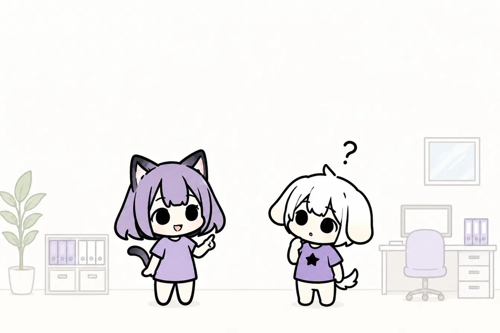
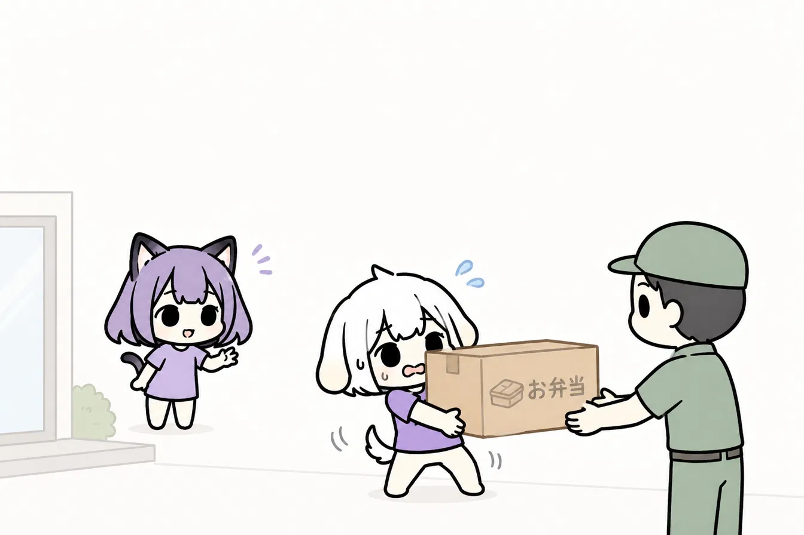
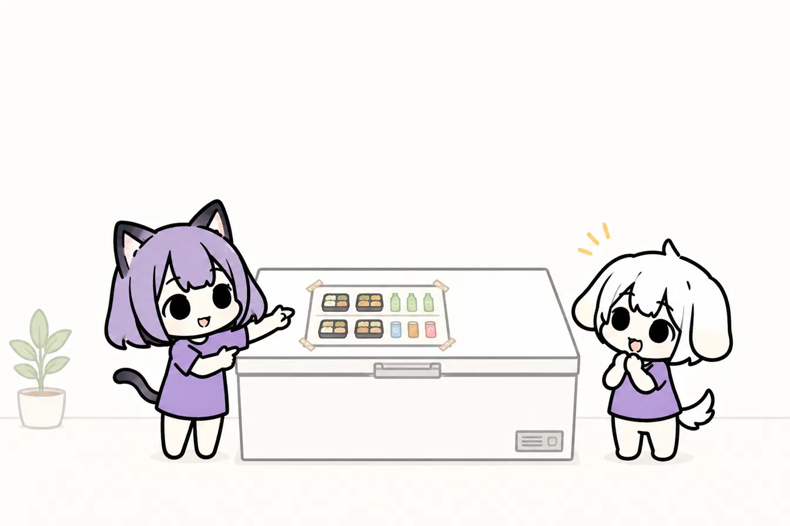
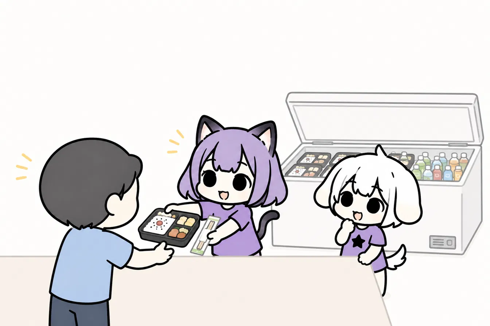
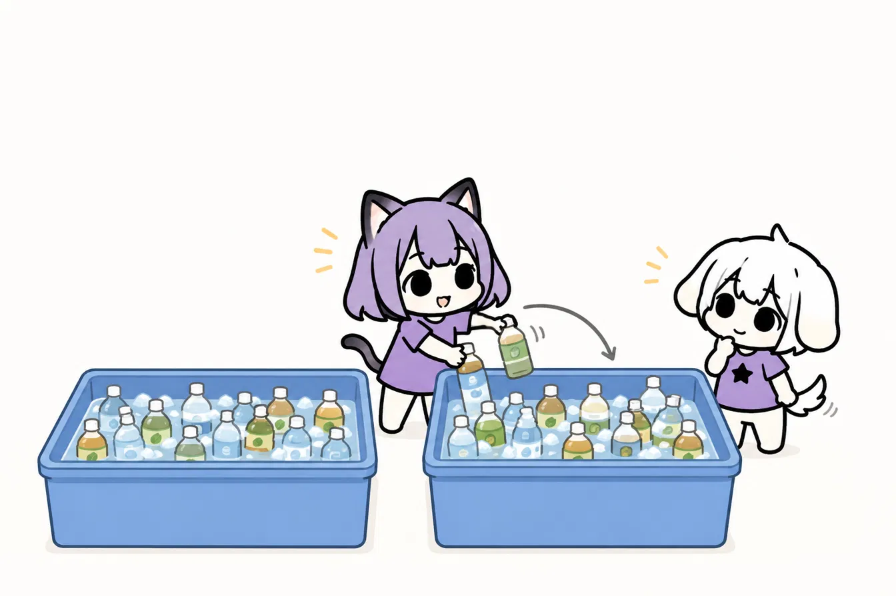
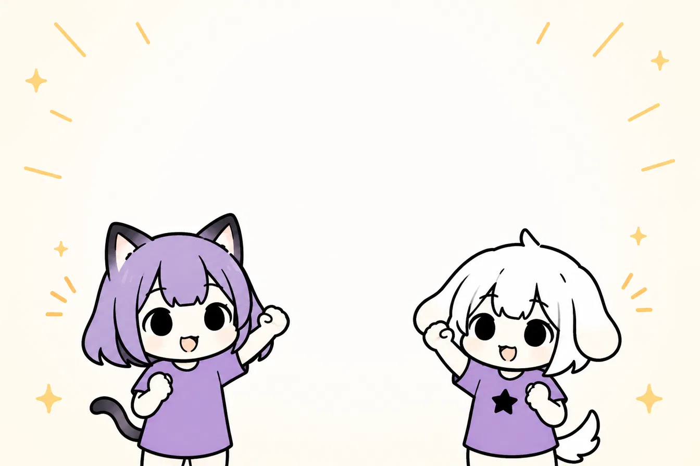

🍱 お弁当＆給水ってなにするの？
全ボランティアのお昼ごはん（お弁当）と飲み物を配るお仕事です！
お弁当は1人1個、飲み物は何度でもOK🙆
暑い季節の開催なので、みんなにどんどん水分を取ってもらって脱水・熱中症を予防するのが大事なミッションです。
Tokyo Rainbow Pride ボランティア統括セクション

全ボランティアのお昼ごはん（お弁当）と飲み物を配るお仕事です！
お弁当は1人1個、飲み物は何度でもOK🙆
暑い季節の開催なので、みんなにどんどん水分を取ってもらって脱水・熱中症を予防するのが大事なミッションです。

お弁当は時間を分けて3回、業者さんが届けてくれます。
いろんなお店から届くので、何便に何が届くか事前にチェックしておこう！
到着したら連絡が来るので、取りに向かいます。

テントにお弁当を運んだらすぐ冷蔵庫へ！
暑い時期なので保管状態は要注意。ボランティア全員の健康がかかってます💪
冷蔵庫に入れるときは写真を貼り付けて、どこに何のお弁当が入ってるか一目でわかるようにしておくと便利です🗂️

メインイベント！みんなが楽しみにしてるお弁当を配ります。
休憩時間はセクションによってバラバラなので、とっっても忙しいです。
並んでもらって → 選んでもらって → 冷蔵庫から取り出して → お箸やソースも必要なら一緒に渡す。
その間にも次の便のお弁当が到着！ 急いで取りに行って冷蔵庫にしまって……
チームプレーの見せどころです🔥
一人一人の力を合わせて、TRPを支えるボランティアをみんなの力で元気にしましょう！
もったいないと思うけど、配布から2時間が過ぎたら破棄してください。
みんなの健康が何より最優先です！
6月はもう暑い☀️ 時間が過ぎたお弁当は段ボールにまとめて、次の便のために冷蔵庫のスペースを確保しておきましょう。

お弁当の横のスペースが水分配布エリアです。
ドブ漬けと呼んでる大きい容器に氷とペットボトル飲料を入れてキンキンに冷やします🧊
暑い中がんばってるみんなに「どれにしますか？」と聞いて、タオルで拭いてから渡してあげてください。
常に冷えたものを渡せるように、減ってきたら片方のドブ漬けに入れ替えて、空いたスペースにどんどん追加していきましょう。
暑い中ぬるいスポーツ飲料は悲しいです😢
「いっぱい水分取ってくださいね！」「無くなったらどんどん来てください！」
そんな一声が、もうひと踏ん張りの力になるはずです。
